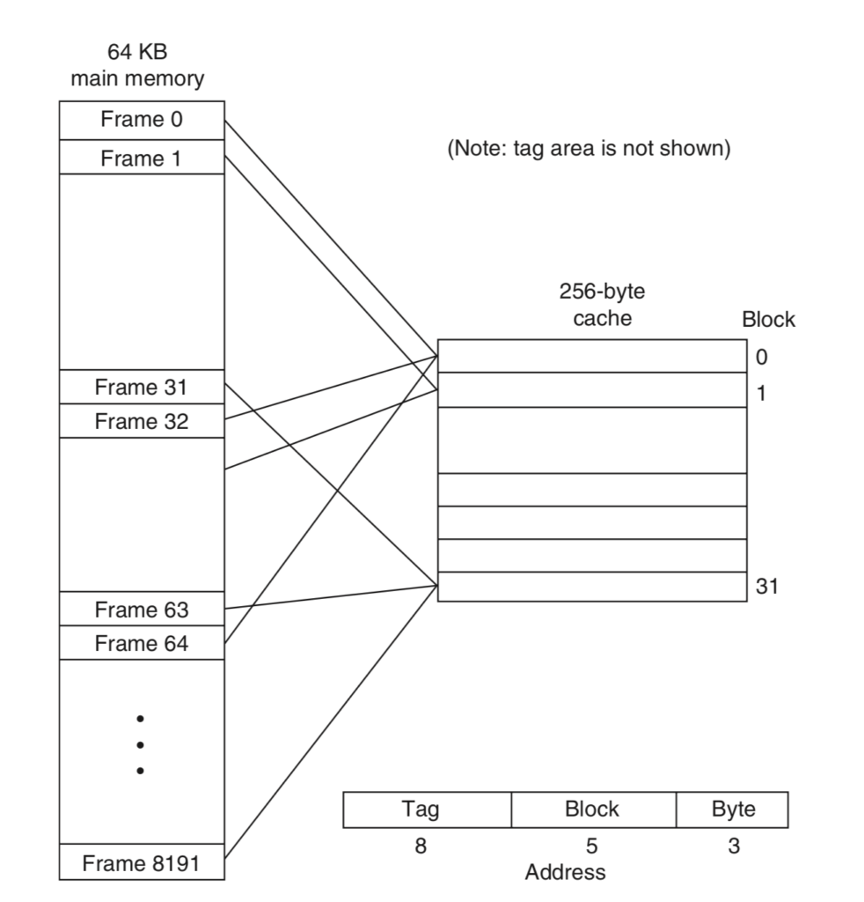
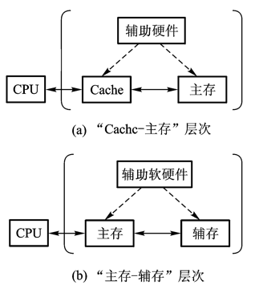
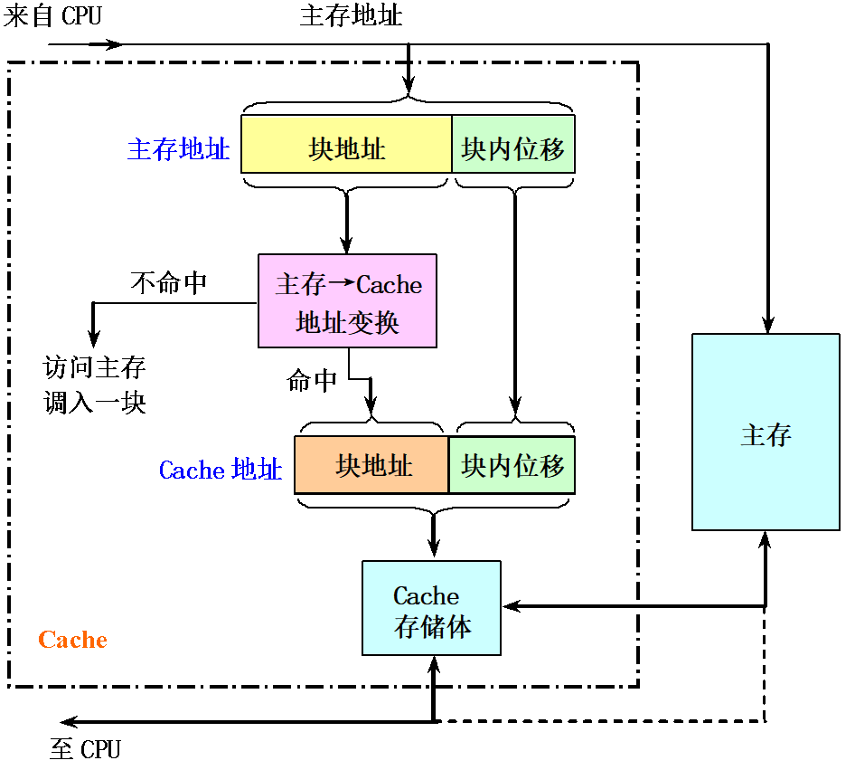
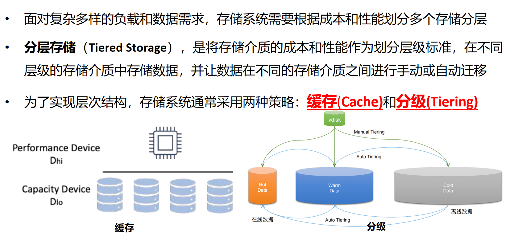
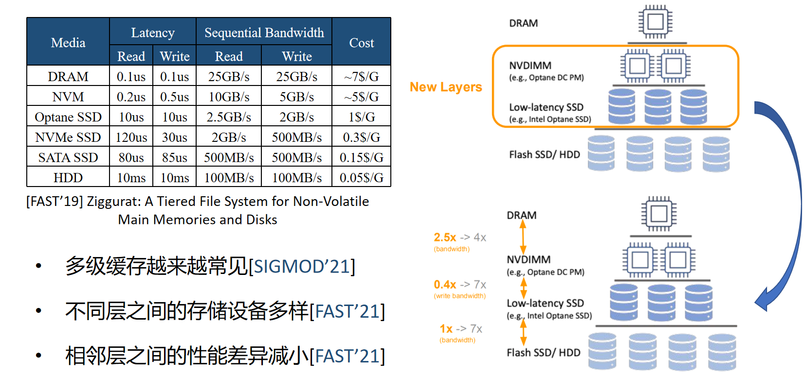
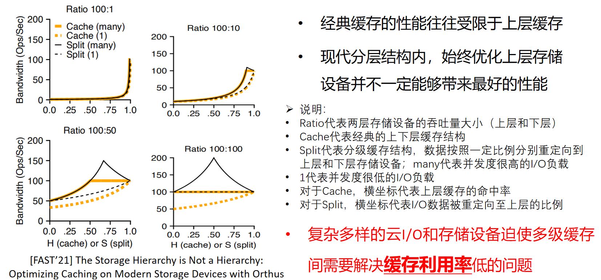
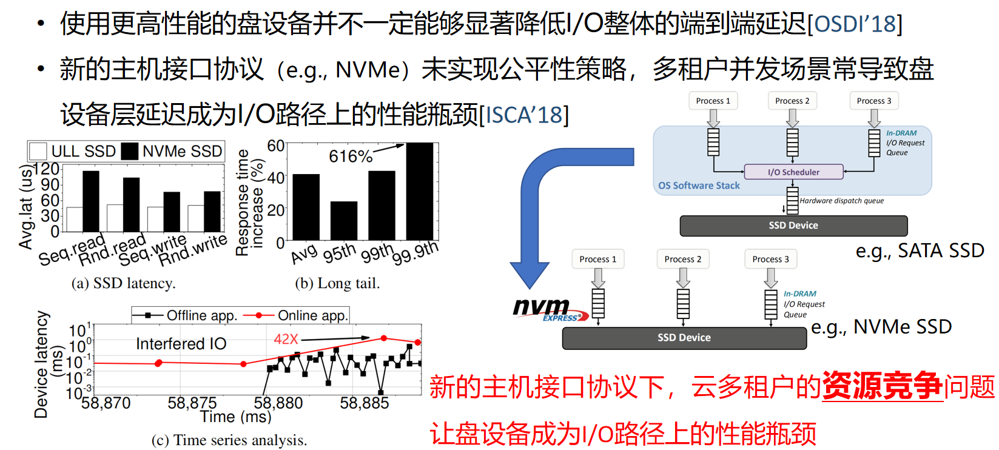
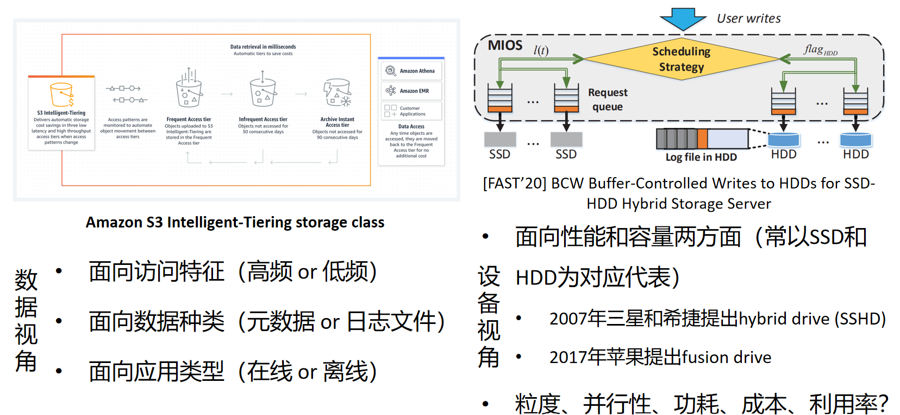

施展 武汉光电国家研究中心 光电信息存储研究部
https://shizhan.github.io/ https://shi_zhan.gitee.io/
NAND 介质特性 → SSD 架构 → 三挑战（映射/缓存/公平性）→ 预测优化 → QoS 保障
与 M2《性能预测技术与服务质量保障》构成"设备层 系统层"对偶：同一研究项目的两层优化
NAND 闪存与 SSD 架构
延迟从 10ms 降至 100μs——两个数量级的跨越
粒度不对称 + 延迟不对称 = 闪存管理的核心挑战
闪存转换层（Flash Translation Layer） 核心职责：
FTL 是 SSD 固件的核心——本讲三挑战均围绕 FTL 展开
┌─────────────────────────────────┐ │ SSD Controller │ │ ┌───────────┐ ┌─────────────┐ │ │ │ FTL Engine │ │ DRAM Cache │ │ │ └─────┬─────┘ └──────┬──────┘ │ │ │ │ │ │ ┌─────┴───────────────┴─────┐ │ │ │ Multi-Queue Scheduler │ │ │ └──┬────┬────┬────┬────────┘ │ └─────┼────┼────┼────┼───────────┘ CH0 CH1 CH2 CH3 (Channels) ▓▓ ▓▓ ▓▓ ▓▓ (NAND Chips)
并行度 = Channel × Chip × Die × Plane
高并行度 → 高吞吐，但也带来公平性挑战（挑战三）
NVMe 多队列为多租户隔离提供了硬件基础——也引出了公平性挑战
引出三挑战：映射 / 缓存 / 公平性
LBA → PBA 的映射与空间管理

1TB SSD 页级映射需 ~4GB DRAM——映射表开销不可忽视
LBA 0 → CH0, Die0 LBA 4 → CH0, Die1 LBA 1 → CH1, Die0 LBA 5 → CH1, Die1 LBA 2 → CH2, Die0 LBA 6 → CH2, Die1 LBA 3 → CH3, Die0 LBA 7 → CH3, Die1
设备层（M3）：地址映射优化——预测访问模式 → 分散热点到多 Channel
系统层（M2）：数据分布与负载均衡——预测负载 → 合理分配存储资源
两层优化服务于同一目标：提升存储系统的并行度与 QoS
从规则驱动到学习驱动
本节的核心工作（ICCD'22 多因子协作替换）曾在《对象存储》挑战三末尾作为一句话引子出现：
同一个结论，在机制层展开成完整的设计与验证
引子出处：《对象存储》挑战三「更多的问题——用预测提高缓存算法效率」


传统策略只考虑 1-2 个维度。SSD 缓存替换需要综合考虑：
→ 多维度综合决策 = 预测问题

权重 = w1×频率+w2×时间局部性+w3×大小+w4×写入代价w_1 \times \text{频率} + w_2 \times \text{时间局部性} + w_3 \times \text{大小} + w_4 \times \text{写入代价}w1×频率+w2×时间局部性+w3×大小+w4×写入代价
权重自适应调整：根据负载特征动态更新 w1,w2,w3,w4w_1, w_2, w_3, w_4w1,w2,w3,w4

DRAM 层替换 → 考虑是否晋升/降级到 NAND 层 → NAND 层替换 → 驱逐到后端

从被动隔离到协作感知
本节的核心工作（DAC'23 + CoFS TCAD'24）同样在《对象存储》挑战三末尾出现过引子：
另一条线索来自《性能预测技术与服务质量保障》：那一讲在系统层用错误预算分配 SLO，本节在设备层用协作组重分并行度——两层各管一段
引子出处：《对象存储》挑战三「用预测协调缓存和调度公平性」

Step 1：识别租户协作模式（访问重叠度、时间相关性）

Step 2：协作组内公平调度（组内优先协调，组间公平分配）
设备层（M3）：CoFS 实现 NVMe SSD 内部的协作感知公平调度
系统层（M2）：CoFS 作为约束优化方法保障分布式存储 QoS
同一篇论文，两个抽象层级——设备层提供机制，系统层提供目标
介质创新 + 接口革新 + 计算融合 + 智能调度
AI 负载驱动 SSD 从"通用存储"向"智能存储"演进
Source: SNIA FDP Specification
Source: NVMe ZNS Specification
Source: Key-Value SSD
Source: Computational Storage
Source: GPUDirect Storage
Source: Samsung HBF
AI 时代的 SSD = 介质创新 + 接口革新 + 计算融合 + 智能调度
预测题（请先写下你的判断，再观看演示）：
给定访问序列 (A, B, C, A, D, E, A, B, F, A, ...)，缓存大小 = 3
LRU vs FIFO vs Random，谁的命中率高？
A) LRU B) FIFO C) Random D) 差不多
理由：________________
映射 → 预测访问模式，优化地址分配 ↓ 缓存 → 多维度预测，智能替换决策 ↓ 公平性 → 预测干扰模式，协作感知调度
三挑战殊途同归：在 SSD 设备层引入预测方法加以优化
M2 系统层：分布式存储 → 性能预测 → QoS 保障
M3 设备层：闪存存储 → 预测优化 → 服务质量
同一研究项目，两层优化：